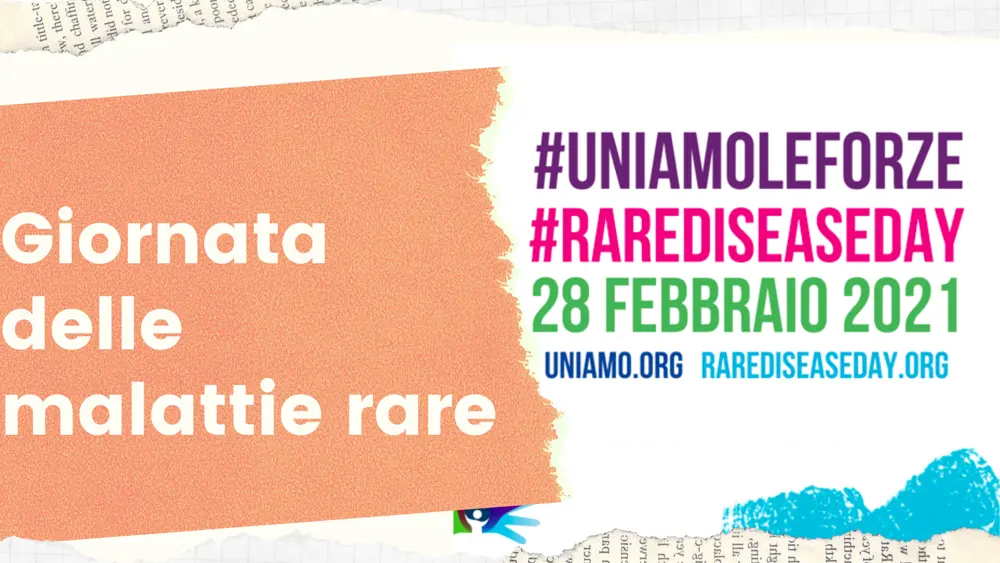

Giornata delle malattie rare

Oggi, domenica 28 febbraio è stata la giornata dedicata alle malattie rare. Definite rare perché colpiscono 1 persona su 2000, ma proprio per questo basso numero, diventa un problema sanitario globale.
Considerando che del 60% dei malati, solo 1 su 5 riceve la diagnosi, dopo un'attesa che va da un minimo di 2 anni ad un massimo di 7 anni e c'è poi il 40% che resta purtroppo senza una diagnosi.
Capirete dunque, l'importanza di questa data che, dal 2008 contribuisce a sostenere l'associazione UNIAMO (Federazione delle Associazioni di Persone con Malattie Rare d'Italia) che aiuta a mettere luce su tali patologie ancora sconosciute.
In Italia si contano 2 milioni di malati rari, 30 milioni solo nell'UE.
"Molte diagnosi errate, che vengono ripetuta negli anni, la grande difficoltà nell’accedere ad informazioni corrette, la mancanza di sostegno, l’assistenza scarsamente, l'assenza di terapie efficaci.Ma anche le discrepanze nell’accesso ai medicinali, la mancanza d'informazione e di opportunità di essere coinvolti nella ricerca sono le quotidiane problematiche che non migliorano la vita dei malati".
Queste situazioni sono peggiori se parliamo appunto, di malattie rare e molte di esse anche del tutto sconosciute alla medicina.
Proprio per sensibilizzare l'opinione pubblica, è stata indetta la giornata delle Malattie Rare.
Quest'anno in particolare, questa giornata si è focalizzata sulle misure di sicurezza adottate in questo tempo di Covid19.
Per limitare i danni, sempre più pazienti che soffrono di tali malattie, si sono trovati in difficoltà, costretti a interrompere gli accessi ospedalieri per proteggersi dalla possibilità di infezioni dal virus.
Di conseguenza limitando anche i controlli periodici e soprattutto le cure che vanno fatte necessariamente in ospedale.
Le associazioni.
Ma un grazie va alle associazioni come:
l'ERNs (European References Networks) e alcune associazioni neurologiche che hanno attivato assistenze telematiche per dare tutta l'assistenza psicologia e informativa a riguardo.
Saprete sicuramente che la neurologia è essenziale nella cura di malattie rare, in quanto caratterizzano il 50% di oltre 7000 di malattie considerate rare.
Ed è per questo che questa giornata è importante; è importante mettere luce su queste patologie e richiamare l'attenzione sulle necessità sociali e cliniche dei pazienti e delle famiglie colpite da una malattia rara.
È importante l'informazione e soprattutto impegnarsi per se stessi e gli altri!